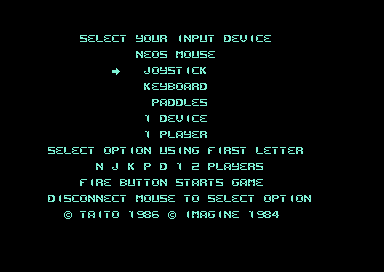

<meta charset="utf-8">
<meta name="viewport" content="width=device-width, initial-scale=1">
<title>Arkanoid: controls</title>
<link rel="preconnect" href="https://fonts.googleapis.com">
<link rel="stylesheet" href="https://fonts.googleapis.com/css2?family=Lato:wght@400;700;900&family=IBM+Plex+Mono:wght@400;500&display=swap">
<style>
:root{
  --bg:#23262d; --paper:#e9e7e1; --surface:#ffffff; --surface-2:#f1efea; --line:#d5d3cc; --line-soft:#e0ded8;
  --ink:#2f3136; --ink-soft:#55585f; --ink-mute:#80838a;
  --link:#1f5fa8; --link-hover:#154480; --accent:#1f5fa8;
  --amber:#c25a00; --cyan:#1f5fa8; --coral:#d04a3a; --green:#2a8a4a; --violet:#4a5bd6; --hl:#fff0c2;
  --chip:#2f3136; --chip-ink:#ffffff;
  --c64blue:#40318d; --c64grey:#686868;
  --fd:'Lato',system-ui,sans-serif; --fb:'Lato',system-ui,sans-serif; --fm:'IBM Plex Mono',ui-monospace,Menlo,monospace;
  --col:1080px; --gx:68px; --fs:17px; --lh:1.6; --hw:900; --h1:46px; --h2:26px; --sy:48px; --pp:26px; --r:10px;
  --plate-shadow:0 1px 2px rgba(0,0,0,.05),0 4px 14px rgba(0,0,0,.05);
}
*{box-sizing:border-box}
html{background:var(--bg);min-height:100%}
body{background:var(--paper);color:var(--ink);font-family:var(--fb);font-size:var(--fs);line-height:var(--lh);max-width:var(--col);margin:0 auto;min-height:100vh;padding:0 0 4rem}
h1,h2,h3{font-weight:var(--hw);letter-spacing:-.01em;text-wrap:balance;color:var(--ink);margin:0}
h3{font-size:19px;margin:26px 0 8px}
.wrap{padding:0 var(--gx)}
.hero{padding:48px var(--gx) 8px;text-align:left}
.eyebrow{font-family:var(--fm);font-size:12px;letter-spacing:.08em;text-transform:uppercase;color:var(--ink-mute);margin:0 0 10px}
.hero h1{font-size:var(--h1);line-height:1.15;letter-spacing:-.02em;margin:0 0 14px}
.hero .sub{margin:0 0 .6em;color:var(--ink-soft)}
section{padding:var(--sy) 0 24px}
section:last-of-type{border-bottom:none}
.fig{font-family:var(--fm);font-size:12px;letter-spacing:.08em;text-transform:uppercase;color:var(--ink-mute);margin:0 0 10px}
h2.t{font-size:var(--h2);margin-bottom:12px}
.lede{color:var(--ink-soft);margin:0 0 30px}
.plate{background:var(--surface);border:1px solid var(--line);border-radius:var(--r);padding:var(--pp);box-shadow:var(--plate-shadow);margin:0 0 22px}
.cap{font-size:14px;color:var(--ink-mute);margin-top:14px;line-height:1.55}
.cap b{color:var(--ink);font-weight:700}
code{font-family:var(--fm);font-size:.82em;background:var(--chip);color:var(--chip-ink);border-radius:4px;padding:2px 6px;white-space:nowrap}
canvas{image-rendering:pixelated;max-width:100%;display:block}
.row{display:flex;flex-wrap:wrap;gap:8px;align-items:center;margin:12px 0 0}
button{font-size:13px;padding:6px 11px}
button.on{background:var(--btn-on-bg);color:var(--btn-on-ink);border-color:var(--btn-on-line)}
input[type=range]{width:220px}
.lab{font-family:var(--fm);font-size:13px;color:var(--ink-soft)}
table{border-collapse:collapse;width:100%;font-size:15px;margin:8px 0 0}
th,td{text-align:left;padding:6px 10px;border-bottom:1px solid var(--line-soft);vertical-align:top}
th{font-size:12px;font-family:var(--fm);text-transform:uppercase;letter-spacing:.06em;color:var(--ink-mute);font-weight:500}
.scroll{overflow-x:auto}
.bands{font-family:var(--fm);font-size:13px;line-height:1.5;margin:12px 0 0;padding:0;list-style:none}
.bands li{padding:4px 8px;border-left:3px solid transparent;cursor:default}
.bands li.hl{background:var(--hl);border-left-color:var(--amber)}
.two{display:grid;grid-template-columns:auto 1fr;gap:22px;align-items:start}
.out{font-family:var(--fm);font-size:14px;background:var(--surface-2);border-radius:6px;padding:10px 12px;margin:12px 0 0;min-height:3.2em}
.stages{display:grid;grid-template-columns:repeat(16,1fr);gap:3px;margin:12px 0 0}
.stages button{padding:5px 0;font-size:12px}
.msg{font-size:14px;color:var(--coral)}
.ak-cv{width:100%;max-width:768px;height:auto;background:#000;border-radius:4px}
.scroll+p{margin-top:22px}
.spd{display:grid;grid-template-columns:auto 1fr;gap:6px 14px;font-family:var(--fm);font-size:14px;margin:14px 0 0}
.bar{height:14px;background:var(--amber);border-radius:3px}
.bar.p{background:var(--cyan)}
.cards{display:grid;grid-template-columns:repeat(auto-fill,minmax(150px,1fr));gap:12px}
.card{background:#000;border-radius:8px;padding:10px;color:#e9e7e1}
.card canvas{margin:0 auto}
.card .nm{font-family:var(--fm);font-size:12px;margin:8px 0 0;color:#e9e7e1}
.card .nm span{display:block;color:#9a9da4}
.sheet{display:grid;grid-template-columns:repeat(auto-fill,minmax(64px,1fr));gap:6px}
.sheet div{background:#000;border-radius:6px;padding:4px;text-align:center}
.sheet canvas{margin:0 auto}
.sheet span{display:block;font-family:var(--fm);font-size:11px;color:#9a9da4}
.sheet h3{grid-column:1/-1;font-size:15px;margin:14px 0 2px;background:none}
@media (max-width:760px){:root{--gx:16px;--h1:36px;--pp:14px}.two{grid-template-columns:1fr}.stages{grid-template-columns:repeat(8,1fr)}}
</style>

<!-- tabs -->
<header class="hero">
  <p class="eyebrow">Commodore 64 · 1987 · Imagine</p>
  <h1>Arkanoid: controls</h1>
  <p class="sub">Four ways to steer the Vaus, chosen on a menu before every game: a joystick, the keyboard, paddles or a Neos mouse. Each is read by its own routine, and they do not feel the same.</p>
</header>
<main class="wrap">

<section id="menu">
  <p class="fig">01 · The menu</p>
  <h2 class="t">Seven keys, then fire</h2>
  <figure class="plate">
    <p class="cap">The menu with the joystick chosen, in an emulator.</p></figure>
  <div class="scroll"><table>
    <tr><th>Key</th><th>Where</th><th>Effect</th></tr>
    <tr><td>N, J, K, P</td><td>menu</td><td>the device: Neos mouse, joystick, keyboard or paddles (<code>input_device</code>, <code>$093F</code>)</td></tr>
    <tr><td>1, 2</td><td>menu</td><td>one or two players, taking turns (<code>$0939</code>)</td></tr>
    <tr><td>D</td><td>menu</td><td>one device or two: with two, player 2 uses port 2 (<code>two_devices</code>, <code>$0940</code>)</td></tr>
    <tr><td>Fire</td><td>menu</td><td>starts the game when it is let go, not when it is pressed (<code>menu_keys</code>, <code>$B59C</code>)</td></tr>
    <tr><td>Fire, a joystick direction, or a key of keyboard row 7</td><td>title</td><td>goes to the menu (<code>$B4E3</code>)</td></tr>
    <tr><td>The same</td><td>attract mode</td><td>back to the title (<code>$956B</code>-<code>$957C</code>)</td></tr>
  </table></div>
  <p>The menu reads its keys by their places in the keyboard matrix (<code>menu_key_codes</code>, <code>$B5BD</code>), through one routine that tests a single key (<code>key_held</code>, <code>$0832</code>). A key counts once, when it changes from the last one held, so holding D does not flip the setting back and forth. While no key is down, the menu runs the chosen device's reader, the same one play uses, and waits for its fire button to be pressed and let go.</p>
  <p>The title and the attract mode are left by anything on the row the game keeps selected, keyboard row 7, which holds SPACE, RUN/STOP, Q, 1, 2, CTRL, ← and the Commodore key, or by any line of either joystick port: the game reads both ports and ANDs them (<code>$956B</code>-<code>$9573</code>).</p>
</section>

<section id="devices">
  <p class="fig">02 · Four devices</p>
  <h2 class="t">One reader for each device</h2>
  <p class="lede">Each frame the game jumps to the chosen device's reader through a table (<code>read_input_device</code>, <code>$FC9F</code>), in the menu's order: N, J, K, P.</p>
  <div class="scroll"><table>
    <tr><th>Device</th><th>Moves the Vaus</th><th>Fire</th></tr>
    <tr><td>Joystick (<code>read_joystick</code>, <code>$FDA2</code>)</td><td>port 1, or port 2 for player 2 with two devices; left and right only, a step that grows with the ball's speed</td><td>the stick's button</td></tr>
    <tr><td>Keyboard (<code>read_keyboard</code>, <code>$FD7B</code>)</td><td>left SHIFT left, right SHIFT right, the same steps as the joystick</td><td>SPACE, or fire on a joystick in port 1</td></tr>
    <tr><td>Paddles (<code>read_paddle</code>, <code>$FE09</code>)</td><td>the paddle's position, read from the sound chip (<code>$D419</code> for player 1, <code>$D41A</code> for player 2)</td><td>the paddle's button (<code>$DC01</code> bit 2 or 3)</td></tr>
    <tr><td>Neos mouse (<code>read_neos_mouse</code>, <code>$FE43</code>)</td><td>its movement, read as four 4-bit pieces through the port</td><td>the button, when <code>$D419</code> reads <code>$FF</code></td></tr>
  </table></div>
  <p>The joystick in port 1 is unusual: most games read port 2. Player 1's joystick and mouse are read on port 1, and with one device both players share it. Up and down are read and ignored. Pressing left and right together leaves the Vaus where it is (<code>joystick_step</code>, <code>$FDBF</code>).</p>
  <p>The keyboard is the joystick by another route. <code>read_keyboard</code> turns the two SHIFT keys into the joystick's left and right bits (<code>$0203</code>) and hands them to the same step routine. Its fire is bit 4 of port 1, which is both SPACE and a joystick's fire, so a stick in port 1 can fire for the keyboard player.</p>
  <p>Whatever the device, <code>place_vaus</code> (<code>$FCEE</code>) then keeps the Vaus between the walls, its left edge at X <code>$20</code> or more and its right edge below <code>$DB</code>, and reaching the right-hand limit is what lets it through an open Break exit (<code>$023E</code>).</p>
</section>

<section id="speed">
  <p class="fig">03 · Stick or paddle</p>
  <h2 class="t">The joystick speeds up with the ball; the paddle goes where the hand is</h2>
  <p class="lede">A joystick moves the Vaus a fixed step each frame, and the step is tied to the ball's speed. A paddle sets where the Vaus should be, and it closes half the distance each frame.</p>
  <div class="plate">
    <div class="row"><label class="lab" for="ct-speed">Ball speed</label><input type="range" id="ct-speed" min="1" max="11" value="2"><span class="lab" id="ct-speed-v"></span></div>
    <div class="spd" id="ct-out"></div>
    <p class="cap"><b>How many frames each device takes to move the Vaus 100 pixels</b>, at fifty frames a second. The joystick's step is 2 × (speed + 1) pixels a frame (<code>joystick_step</code>, <code>$FDBF</code>, from <code>ball_speed</code>, <code>$023A</code>). The paddle's new centre is (255 − reading + old centre) / 2, rounded down (<code>read_paddle</code>, <code>$FE09</code>), counted here until the Vaus is within a pixel of the target. A life starts at speed 2; the S capsule takes one off, the D capsule adds one, and the speed rises as the round goes on, up to 11 (<code>$ADE7</code>).</p>
  </div>
  <p>At the start of a life the stick moves the Vaus 6 pixels a frame, and late in a long round 24, so fine aiming gets harder as the ball gets faster. The paddle has no such limit: it covers most of a move in the first few frames whatever the ball is doing. Players on Lemon64 say the game is much better with paddles (<a href="index.html#reception">Reception</a>). How the Vaus sends the ball back once it gets there is on the <a href="mechanics.html">How it works</a> tab.</p>
</section>

<section id="mouse">
  <p class="fig">04 · The Neos mouse</p>
  <h2 class="t">Bug: the mouse reader loses track of its port</h2>
  <p>The Neos mouse sends its movement four bits at a time. The game sets bit 4 of the mouse's port to an output and toggles it between reads, with short delays between (<code>delay_y</code>, <code>$FEC9</code>), to collect the high and low halves of the X movement and then of the Y movement. Part way through, a <code>TAX</code> at <code>$FE86</code> puts the X movement in the register that held the port's number. The reads and writes after it, <code>$DC00</code>,X, then reach the CIA 1 register the movement happens to pick rather than the mouse's port. This was traced in the code and not tried with a mouse: the emulator's Neos mouse was not used.</p>
  <p>An older copy of the same reader, left in memory and never run, reads port 2 only, by its fixed addresses, and does not have the bug (<code>old_build_mouse</code>, <code>$BEDF</code>).</p>
</section>

</main>
<footer style="margin:16px 0 0;padding:22px var(--gx) 0;border-top:1px solid #e0ded8;font-family:'IBM Plex Mono',ui-monospace,Menlo,monospace;font-size:12px;color:#80838a"><a href="https://github.com/gamesexplained/gamesexplained" aria-label="GitHub" style="display:inline-flex;align-items:center;justify-content:center;width:26px;height:26px;margin-left:8px;border:1px solid #e0ded8;border-radius:7px;background:#ffffff;color:#80838a;vertical-align:middle"><svg width="15" height="15" viewBox="0 0 24 24" fill="currentColor" aria-hidden="true"><path d="M12 .297c-6.63 0-12 5.373-12 12 0 5.303 3.438 9.8 8.205 11.385.6.113.82-.258.82-.577 0-.285-.01-1.04-.015-2.04-3.338.724-4.042-1.61-4.042-1.61C4.422 18.07 3.633 17.7 3.633 17.7c-1.087-.744.084-.729.084-.729 1.205.084 1.838 1.236 1.838 1.236 1.07 1.835 2.809 1.305 3.495.998.108-.776.417-1.305.76-1.605-2.665-.3-5.466-1.332-5.466-5.93 0-1.31.465-2.38 1.235-3.22-.135-.303-.54-1.523.105-3.176 0 0 1.005-.322 3.3 1.23.96-.267 1.98-.399 3-.405 1.02.006 2.04.138 3 .405 2.28-1.552 3.285-1.23 3.285-1.23.645 1.653.24 2.873.12 3.176.765.84 1.23 1.91 1.23 3.22 0 4.61-2.805 5.625-5.475 5.92.42.36.81 1.096.81 2.22 0 1.606-.015 2.896-.015 3.286 0 .315.21.69.825.57C20.565 22.092 24 17.592 24 12.297c0-6.627-5.373-12-12-12"/></svg></a><a href="https://discord.gg/3V9GWyRDWV" aria-label="Discord" style="display:inline-flex;align-items:center;justify-content:center;width:26px;height:26px;margin-left:8px;border:1px solid #e0ded8;border-radius:7px;background:#ffffff;color:#80838a;vertical-align:middle"><svg width="15" height="15" viewBox="0 0 24 24" fill="currentColor" aria-hidden="true"><path d="M20.317 4.3698a19.7913 19.7913 0 00-4.8851-1.5152.0741.0741 0 00-.0785.0371c-.211.3753-.4447.8648-.6083 1.2495-1.8447-.2762-3.68-.2762-5.4868 0-.1636-.3933-.4058-.8742-.6177-1.2495a.077.077 0 00-.0785-.037 19.7363 19.7363 0 00-4.8852 1.515.0699.0699 0 00-.0321.0277C.5334 9.0458-.319 13.5799.0992 18.0578a.0824.0824 0 00.0312.0561c2.0528 1.5076 4.0413 2.4228 5.9929 3.0294a.0777.0777 0 00.0842-.0276c.4616-.6304.8731-1.2952 1.226-1.9942a.076.076 0 00-.0416-.1057c-.6528-.2476-1.2743-.5495-1.8722-.8923a.077.077 0 01-.0076-.1277c.1258-.0943.2517-.1923.3718-.2914a.0743.0743 0 01.0776-.0105c3.9278 1.7933 8.18 1.7933 12.0614 0a.0739.0739 0 01.0785.0095c.1202.099.246.1981.3728.2924a.077.077 0 01-.0066.1276 12.2986 12.2986 0 01-1.873.8914.0766.0766 0 00-.0407.1067c.3604.698.7719 1.3628 1.225 1.9932a.076.076 0 00.0842.0286c1.961-.6067 3.9495-1.5219 6.0023-3.0294a.077.077 0 00.0313-.0552c.5004-5.177-.8382-9.6739-3.5485-13.6604a.061.061 0 00-.0312-.0286zM8.02 15.3312c-1.1825 0-2.1569-1.0857-2.1569-2.419 0-1.3332.9555-2.4189 2.157-2.4189 1.2108 0 2.1757 1.0952 2.1568 2.419 0 1.3332-.9555 2.4189-2.1569 2.4189zm7.9748 0c-1.1825 0-2.1569-1.0857-2.1569-2.419 0-1.3332.9554-2.4189 2.1569-2.4189 1.2108 0 2.1757 1.0952 2.1568 2.419 0 1.3332-.946 2.4189-2.1568 2.4189Z"/></svg></a><br>© Games Explained contributors. Write-ups, facts and symbol maps are available under <a href="https://creativecommons.org/licenses/by-sa/4.0/" style="color:#1f5fa8;text-decoration:none">CC BY-SA 4.0</a>; code under <a href="https://opensource.org/licenses/MIT" style="color:#1f5fa8;text-decoration:none">MIT</a></footer>
<script>
(function () {
  const $ = (id) => document.getElementById(id);
  // the joystick: 2 x (speed + 1) pixels a frame ($FDBF); the paddle: centre = (target + centre) / 2,
  // rounded down ($FE09), with the target the pot reading turned round (255 - value)
  const stick = (s) => Math.ceil(100 / (2 * (s + 1)));
  const paddle = () => { let c = 0, f = 0; while (100 - c > 1) { c = Math.floor((100 + c) / 2); f++; } return f; };
  const draw = () => {
    const s = +$('ct-speed').value, j = stick(s), p = paddle();
    $('ct-speed-v').textContent = s + ' (' + 2 * (s + 1) + ' pixels a frame for the stick)';
    const row = (name, f, cls) => '<span>' + name + '</span><span><span class="bar ' + cls + '" style="display:inline-block;vertical-align:middle;width:' +
      Math.min(100, f * 3) + '%"></span> ' + f + ' frames</span>';
    $('ct-out').innerHTML = row('Joystick', j, '') + row('Keyboard', j, '') + row('Paddle', p, 'p');
  };
  $('ct-speed').addEventListener('input', draw);
  draw();
})();
</script>
